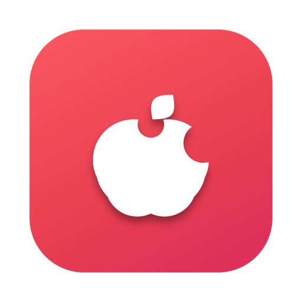

AOT A64 rewrite
Every patch site in 64-bit modules is found and rewritten at build time; native execution for the rest. Loader with NSO / NRO, modules and relocations.

Recompilation toolchain · Apple Silicon · macOS 26+ · early & experimental
Napple rewrites a program's own ARM64 code ahead of time, answers the console OS with a Horizon runtime and translates the GPU API to Metal.
No emulator. No JIT. The output is a standalone, locally signed .app.
Requires an Apple Silicon Mac. You bring your own game, keys and firmware; nothing is bundled.
The Switch and Apple Silicon are both ARM64. Napple does not emulate the console: it keeps the program's own machine code and rewrites, ahead of time, only what macOS forbids. Everything happens on your Mac, at build time, from files you provide.
XCI / NSP / NSZ / XCZ containers, NCA decryption with your keys, ExeFS and RomFS, updates and DLC merged in any order.
Load the NSO modules, discover functions and scan for every patch site.
Look up known functions by signature, from data. Per-program knowledge lives in data, never in per-program code.
The reserved x18 register, thread pointer, svc calls, timer counters and 4K pages are rewritten. Everything else runs as is.
A locally signed .app: the patched modules plus the Horizon runtime, NVN → Metal, audio, input and saves.
At run time the guest code executes directly on the CPU. There is no interpreter and no recompiler in the shipped runtime.
Napple targets the Switch platform as a whole, not individual titles. A short, honest summary of each layer:
Every patch site in 64-bit modules is found and rewritten at build time; native execution for the rest. Loader with NSO / NRO, modules and relocations.
32-bit programs are lifted ahead of time from ARM and Thumb-2 (VFP and NEON included) to AArch64. No interpreter ships in the runtime.
A Horizon HLE runtime: svcs, threads and scheduling, memory, IPC sessions and a broad set of system services. Command depth is the open tail.
The NVN API surface, texture and vertex formats, pipeline state, MSAA, indirect draws and queries, translated to Metal. nvdrv / host1x devices are the least complete GPU area.
A translator for the Maxwell shader ISA to Metal shading language, with a pipeline cache on disk.
Audio renderer with effects and Opus over Core Audio; GameController input with rumble, keyboard and mouse; video and media decode.
A SwiftUI app around the toolchain: add your keys once, drop a game, watch each stage, launch or install the result.
Base, updates and DLC in one build, saves in ~/Library/Application Support/Napple, ad-hoc signing on your Mac, and a napple CLI for every stage.
%Analysis snapshot 2026-11-02, commit 2da952e. An estimate of how much of the Switch platform surface the pipeline and runtime implement, not a per-game compatibility score.
Coverage is not compatibility. The long tail of command depth, shader corner cases and GPU behaviour is exactly what real programs trip over first. How individual titles behave is tracked separately on the compatibility page.
A small SwiftUI app. Give it your keys once, drop a game on the window, watch the pipeline run, launch the result. The first launch sets up the engine and its environment variables for you.
[rewrite] 24% main (1 gates, 5 relocations) [romfs] 62% copying 2.4 GB
An optional service for Napple players, run by the project at pretend.napple.lat. Napple never contacts Nintendo servers
and never handles Nintendo accounts. Signed out, everything works exactly as before.
Sign up with an email, a password and an emailed 6-digit code. One sign-in is shared by every Napple app on your Mac and by the CLI.
Up to 8 profiles per account, each with a nickname, icon, photo and bio. A signed-in Mac plays as its profile.
Public, Friends (searchable), Friends (hidden), Private and Ghost decide who can find you, add you and see what you play. Blocks hide both ways.
Friend codes, requests, a friend list with presence, recent players, blocking and reports.
End-to-end encrypted: saves are encrypted on your device and the server only holds ciphertext. A 24-word recovery code is the way back.
Sign-in, profiles, tier, friends, requests, search and stats from the settings overlay while a program runs.
Multiplayer between Napple players goes through Napple rooms (LAN Play, local wireless) and napple-online (matchmaking). Per-title online status is on the compatibility page. Sign-up email is in the Amazon SES sandbox until production access is granted, so only pre-verified addresses get the code for now. See the Terms, Privacy Policy and Report policy.
napple, runtime, launcher) and sets NAPPLE_HOME / NAPPLE_CLI for you.prod.keys and firmware once, then drop a game you dumped yourself.Prefer the terminal? Unzip the .zip, run ./install.sh, then:
napple build base.xci update.nsp -k prod.keys --firmware firmware.zip -o ~/Apps
The documentation covers the CLI, the architecture and how to contribute.
Builds are ad-hoc signed unless the maintainers have notarization configured. Right-click the app and choose Open, or run once:
xattr -dr com.apple.quarantine /Applications/NappleStudio.app
Needs Apple Silicon and macOS 26 or later. Every commit to main publishes a new release.
prod.keys and firmware from hardware and software you own. They are needed only at build time.